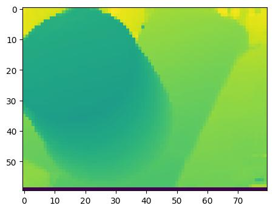

Table of contents
F.grid_sample
F.grid_sample(tensor,p,mode) 把 tensor 插补成与网格 p 有相同大小的 tensor。
网格p指定了在 input 上的采样点坐标，在采样点附近插值形成一个新像素，各 channel 上采样点相同。
grid 中的 (x,y) 已缩放到 [-1,1]，在函数内变换到 [0,W],[0,H] 索引像素
PyTorch中grid_sample的使用方法-csdn
-
mode = ‘bilinear’ 是三线性插值: 双线性插值（bilinear）的3D形式(卿卿小徐的评论); c++源码
-
4D input 对应一个 batch 的图片 (B,C,H,W)。
-
align_corners = True认为input以像素为单位，各像素由其中心点代表，从而做双线性插值的时候，就用像素的四个角点； (2023-10-08: 角点？邻点？)-
False是把 input 当作各像素角点的集合，此时 input 的边界 (W-1,H-1) 小于原来的图片边界 (W,H)，则grid采样点的坐标可能超出 input边界（比如采样点落在图片边缘，而双线性插值需要用周围 4 个点），所以需要在input外围padding，再与各neighbor点做插值。 -
As shown below, black points are input datapoints. In the left figure, the datapoints fit the pixels corners of the input image to be scaled, whereas in the right figure, the datapoints forms an independent image to perform interpolation.
-
A numerical example of difference: Docs - nn.Upsample
-
(2024-03-09) In the left figure, the corners of the grid formed by pixels and sampling points are aligned. Whereas, the right figure isn’t.
-
-
像素中心点的位置与一个像素的大小有关，所以对于相同维度的输入，采样点坐标可能不同。 所以使用像素角点做为基准 (
align_corners = False)，与像素尺寸无关，采样点位置是相对的。 Docs -
线性插值是一维长度的加权平均，双线性插值是二维面积（两个方向）的加权平均：每个顶点的权重是其对角位置上的矩阵面积占比；三线性插值是三维体积的加权和。
-
双线性插值：在x方向和y方向上做线性回归并预测在目标点上的数值。所插值是周围4个neighbor的加权和，权重是两方向上neighbor到目标点距离与两点间距之比的乘积
-
(2023-12-18)
F.grid_sample()cannot sample images?1 2 3import cv2 src = cv2.imread("dtu/Rectified/scan11_train/rect_011_3_r5000.png") # ndarray, (h,w,3) F.grid_sample(torch.from_numpy(src).unsqueeze(0), uv_src.view(1, 192*h, w, 2))And it will lead to:
RuntimeError: grid_sampler_2d_cpu not implemented for ByteTherefore, the image requires to be normalized to [0,1]:
1 2 3 4 5 6 7 8 9 10 11 12 13 14 15 16 17import PIL import torch.nn.functional as F from torchvision import transforms from matplotlib import pyplot as plt h, w = 128, 160 y,x = torch.meshgrid(torch.arange(h), torch.arange(w)) normalized_y, normalized_x = y/h, x/w normalized_xy = torch.stack([normalized_x, normalized_y], dim=-1) src = PIL.Image.open("dtu/Rectified/scan11_train/rect_009_6_r5000.png") src = transforms.ToTensor()(src) samp= F.grid_sample(src.unsqueeze(0), normalized_xy.unsqueeze(0)) # revert to an image samp_scaled = torch.tensor(samp[0] * 255, dtype=int).permute(1,2,0) plt.imshow(samp_scaled)
Example in GNT
train_imgs is a 4D tesnor.
featmaps is a 5D tensor (N, Chanl, D, H, W,), the first dimension also vary determined by the indexing tensor
|
|
F.interpolate
F.interpolate(input, size, [scale_factor,] mode, ) 把 input 缩放到 size，或者各维度缩放 factor 倍。
插值算法为mode。可以处理3D,4D,5D input。4D input的维度：(B, chnls, H, W)
Docs
|
|

scipy zoom
(2024-05-06)
|
|
-
If
mode="constant", the bottom row is 0 (cval).
(2023-10-10)
nn.Upsample
This “layer” has no learnable parameters:
|
|
-
So it may be equal to
torch.nn.functional.interpolate, which can be used as a layer in a model: Which function is better for upsampling: upsampling or interpolate? -
torch.nn.functionallayers require passing the learnable parameters from outside, since they don’t containnn.Parameterlikenn.Moduledoes. Are torch.nn.Functional layers learnable?1 2 3 4 5 6 7 8 9 10 11 12 13class Model(nn.Module): def __init__(self): super(Model, self).__init__() self.weight = nn.Parameter(torch.randn(out_features, in_features)) self.bias = nn.Parameter(torch.randn(out_features)) # Corresponding to a nn.module: self.linear = nn.Linear(in_features, out_features) def forward(self, input): return F.linear(input, weight, bias) # return self.linear(input)
(2023-10-22)
Downsample
-
Conv layer can perform evenly downsampling, referring to Context Cluster Reducing points by fusing neighbors covered by kernels:
1 2proj = nn.Conv2d(in_chans, embed_dim, kernel_size=patch_size, stride=stride, padding=padding) -
Pooling can also be used for placing centers, referring to Context Cluster
1centers_proposal = nn.AdaptiveAvgPool2d((proposal_w, proposal_h)) -
F.interpolate
Trilinear Interp
(2024-02-28)
Perform 2-point interpolation in 3 directions sequentially:
Each point has 3 weights: u, v, w (or (1-u), (1-v), (1-w))